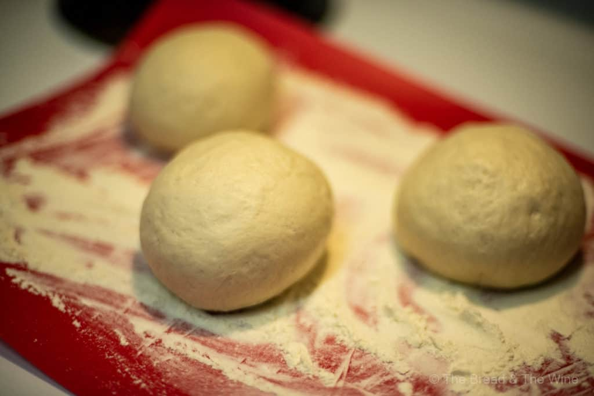

Master Pizza Dough Recipe

Description
On July 22nd, 2020, my life had changed forever… I had just had the greatest piece of pizza in my entire life. I’ve had pizza in Las Vegas, in Rome, in Los Angeles, in Durham, shoot, I have even had pizza in Bangkok, but in the most unexpected of places, Cleveland, OH, in a humble one-man pizza shop named Harlow’s is the greatest pie I have ever had on this entire planet. The lightest dough you could imagine paired with the perfect amount of sauce, buffalo mozzarella, and fresh basil, a perfect masterpiece. From the moment the first slice hit my tongue, I was in awe, I was captivated, I was in love.
Since this moment I have been on a journey to create the perfect pizza at home. I’ve read multiple books on pizza and made countless doughs at home and none quite has the flavor and amazing texture as this Neapolitan style 18-72 hour cold-slow ferment dough recipe below. This wait is long, but the payout is worth it, in fact, the longer you wait, the better the flavor. Try this dough out with my recipe for New York style pizza. Come and join me on my quest. Enjoy.
Ingredients
- 500 grams of “00” flour or bread flour
- 15 grams of kosher salt or coarse sea salt
- 5 grams of active dry yeast
- 300 grams or milliliters of room temperature water
- 3 cloves of garlic
Steps
- Combine flour, salt, and yeast into the bowl of your stand mixer or regular mixing bowl.
- At the lowest speed setting or with a wooden stir in the water until just combined and a rough ball of dough begins to take shape.
- Stop mixing, cover bowl with Press’n Seal, cling wrap, or a damp tea towel. Let sit for 30 minutes.
- Remove cover and begin the kneading process. Set your stand mixer to medium speed setting and knead for about 8 minutes or until the dough is smooth and elastic. If kneading by hand, it will take about 12 minutes using the slap and fold method.
- Remove the dough from your mixing bowl onto a lightly floured countertop and form the dough into a tight ball with a smooth top.
- Use a dough cutter to divide into 3 equal pieces and form each ball of dough into a tight ball with a smooth top.
- Place each ball of dough into a very lightly greased glass container with a lid. The containers should be large enough for the dough balls to double in size.
- Place the containers into a refrigerator to begin the cold-slow fermentation process.
- Let ferment at least 18 hours or up to 96 hours. The sweet spot is 72 hours for mind-numbingly good dough.
- One hour before you plan on using the dough, remove it from the fridge and the container, reform it into a tight ball with a smooth top, cover it with a tea towel, and allow it to rise and come to room temperature before shaping it and covering with sauce and toppings to make pizza. Try out the dough using my guide to homemade New York style pizza. Enjoy!
Click here for more recipes!